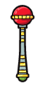
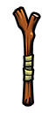
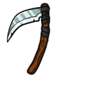
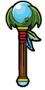
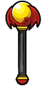
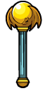
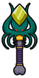
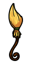
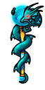

Magic Staffs Collection (All 31 Assets)

Ruby Sphere Staff[cite: 5]
Type: Magic Staff[cite: 5]
Power: 42 Attack[cite: 5]
Ability: Channels concentrated red magical energy pulses[cite: 5].

Apprentice Wooden Rod[cite: 6]
Type: Basic Staff[cite: 6]
Power: 15 Attack[cite: 6]
Ability: A notched wooden stick for novice sorcerers[cite: 6].

Wrapped Branch Staff[cite: 7]
Type: Basic Staff[cite: 7]
Power: 18 Attack[cite: 7]
Ability: Sturdy tree branch bound with cloth straps[cite: 7].

Skull Spiked Wand[cite: 8]
Type: Dark / Necro[cite: 8]
Power: 52 Attack[cite: 8]
Ability: Topped with a hardened skull and iron spikes to invoke dark spirits[cite: 8].

Radiant Sun Crest Staff[cite: 9]
Type: Holy / Light[cite: 9]
Power: 55 Attack[cite: 9]
Ability: Emits holy solar rays that banish darkness and blind foes[cite: 9].

Gilded Crystal Staff[cite: 10]
Type: Elite / Magic[cite: 10]
Power: 48 Attack[cite: 10]
Ability: Polished gold scepter embedded with a sharp magical crystal[cite: 10].

Reaper's Curved Scythe[cite: 11]
Type: Dark / Polearm[cite: 11]
Power: 50 Attack[cite: 11]
Ability: Slashing curved blade designed for close-range magical reaps[cite: 11].

Flame Crest Scepter[cite: 12]
Type: Fire / Staff[cite: 12]
Power: 53 Attack[cite: 12]
Ability: Radiates intense heat to scorch surrounding enemies[cite: 12].

Demonic Horned Staff[cite: 13]
Type: Dark / Curse[cite: 13]
Power: 60 Attack[cite: 13]
Ability: Horned skull headpiece channeling powerful abyssal curses[cite: 13].

Emerald Dragon Orb Staff[cite: 14]
Type: Dragon / Magic[cite: 14]
Power: 58 Attack[cite: 14]
Ability: Protected by a green dragon sculpture cradling a glowing celestial sphere[cite: 14].

Crimson Dragon Scepter[cite: 15]
Type: Fire / Dragon[cite: 15]
Power: 62 Attack[cite: 15]
Ability: Features a red dragon guarding a blazing sun orb that triggers explosions[cite: 15].

Tidal Trident Wand[cite: 16]
Type: Water / Ice[cite: 16]
Power: 54 Attack[cite: 16]
Ability: Summons compressed water pillars and freezing sub-zero blasts[cite: 16].

Golden Dragon Orb Staff[cite: 17]
Type: Elite / Magic[cite: 17]
Power: 64 Attack[cite: 17]
Ability: Ornate golden dragon design channeling supreme arcane energy[cite: 17].

Tribal Ram Skull Staff[cite: 18]
Type: Ancient / Mystic[cite: 18]
Power: 56 Attack[cite: 18]
Ability: Decorated with ceremonial feathers and a ram skull for ancestral magic[cite: 18].

Astral Dragon Scythe[cite: 19]
Type: Cosmic / Dark[cite: 19]
Power: 65 Attack[cite: 19]
Ability: A glowing purple stellar dragon blade emitting deep cosmic energy[cite: 19].

Zephyr Air Wand[cite: 20]
Type: Wind / Air[cite: 20]
Power: 49 Attack[cite: 20]
Ability: Swirls atmospheric winds to launch high-velocity gale projectiles[cite: 20].

Avian Bone Staff[cite: 21]
Type: Necromancy / Bone[cite: 21]
Power: 51 Attack[cite: 21]
Ability: Assembled from ancient skeletal remains and a bird skull to summon spirits[cite: 21].

Eldritch Tentacle Rod[cite: 22]
Type: Eldritch / Poison[cite: 22]
Power: 59 Attack[cite: 22]
Ability: Imbued with cosmic horror and twisting tentacles dripping toxic slime[cite: 22].

Abyssal Spine Scepter[cite: 23]
Type: Dark / Magic[cite: 23]
Power: 57 Attack[cite: 23]
Ability: A curved spinal column topped with a grinning dark shadow jaw[cite: 23].

Volcanic Dragon Jaw Staff[cite: 24]
Type: Fire / Dragon[cite: 24]
Power: 63 Attack[cite: 24]
Ability: Forged from glowing magma plates and sharp dragon scales to burn enemies[cite: 24].

Verdant Nature Staff[cite: 25]
Type: Earth / Nature[cite: 25]
Power: 45 Attack[cite: 25]
Ability: Wrapped in living vines and blooming flowers with a radiant green crystal[cite: 25].

Lantern Flame Staff[cite: 26]
Type: Fire / Light[cite: 26]
Power: 47 Attack[cite: 26]
Ability: An enchanted streetlamp container casting bright warming flames and light[cite: 26].

Spooky Broom Wand[cite: 27]
Type: Event / Mystic[cite: 27]
Power: 40 Attack[cite: 27]
Ability: A festive flying broomstick imbued with mischievous witch sorcery[cite: 27].

Glacial Crystal Wand[cite: 28]
Type: Ice / Crystal[cite: 28]
Power: 55 Attack[cite: 28]
Ability: Formed entirely from jagged blue ice shards that freeze targets solid[cite: 28].

Venomous Crystal Rod[cite: 29]
Type: Poison / Arcane[cite: 29]
Power: 53 Attack[cite: 29]
Ability: Glowing green toxic crystal tip that injects deadly venom into foes[cite: 29].

Abyssal Sea Serpent Staff[cite: 30]
Type: Water / Monster[cite: 30]
Power: 58 Attack[cite: 30]
Ability: Coiled with a blue sea dragon and a glowing hydro sphere[cite: 30].

Black Widow Scepter[cite: 31]
Type: Poison / Dark[cite: 31]
Power: 56 Attack[cite: 31]
Ability: Topped with a menacing purple spider emblem injecting paralyzing toxin[cite: 31].

Carved Stone Relic Staff[cite: 32]
Type: Earth / Heavy[cite: 32]
Power: 46 Attack[cite: 32]
Ability: Heavy ancient stone tip inscribed with protective runic symbols[cite: 32].

Wasteland Sawblade Staff[cite: 33]
Type: Survivor / Melee[cite: 33]
Power: 50 Attack[cite: 33]
Ability: Reinforced with heavy chains and a spinning rusty sawblade tip[cite: 33].

Gilded All-Seeing Eye Staff[cite: 34]
Type: Treasure / Elite[cite: 34]
Power: 61 Attack[cite: 34]
Ability: Ornate golden staff featuring a watchful magical eye that exposes weak points[cite: 34].

Festive Candy Cane Staff[cite: 35]
Type: Event / Holy[cite: 35]
Power: 44 Attack[cite: 35]
Ability: Candy cane striped handle with a snowglobe and holiday gift topper[cite: 35].